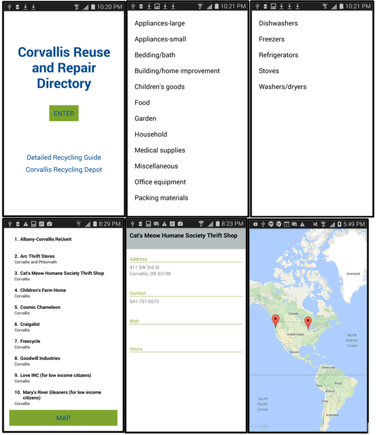

Android Application for Recycling
{kind=link}
Final Project for Software Projects
Spring 2015
Developed an Android application using Android Studio for a company in Corvallis, OR. Focused on creating the app itself while team members created MySQL database, API, and website. App used GETs to access the database through the API.
java Android StudioClient-Server Network Application
Final Project for Intro to Computer Networks
Spring 2015
Created client and server programs to transfer a text file over a socket. The server program was written in C++ and the client was written in Python. The client program could request the server to send a list of the current directory or could request the server to send a text file from the current directory.
C++ PythonUser Interface for Restaurant Menu Application

Final Project for Intro to Usability Engineering
Spring 2014
Created a user interface for a restaurant menu app using myBalsamiq in a team of three. The process to design the user interface followed the PRICPE process of Pre-dispositions, Research, Insights, Concepts, Prototypes, and Evaluate. Performed field research, created story boards and initial prototypes, performed user testing, and modified prototype based on feedback.
myBalsamiqPhoto Storage Website

Final Project for Web Development
Winter 2014
Designed a website with a user login for storing a user’s photos. Users could upload and view their photos. When uploading a file, a progress bar showed the upload status using AJAX. Website and database were written in HTML, CSS, PHP, MySQL, and JavaScript.
HTML CSS mySQL PHP JavascriptOperations Research Case Study

Final Project for Tool & Environments for Optimization
Spring 2011
Used GAMS software to write and solve an optimization problem for the game of Rogo. Displayed problem analysis and description on NEOS Wiki, along with a Java applet that allowed the user to play and solve the puzzle.
View this project here.
GAMS Java